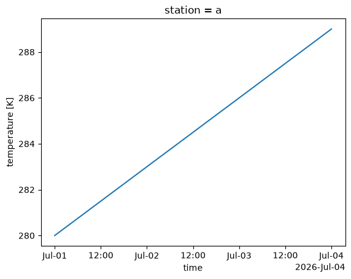

DataArray#
A labelled, units-aware N-dimensional array.
|
A labelled, units-aware N-dimensional array (xarray's |
Each section has a short example; the examples share this setup:
import numpy as np
import annoray as ar
temp = ar.DataArray(
280.0 + np.arange(12.0).reshape(4, 3),
dims=("time", "station"),
coords={"time": ar.date_range("2026-07-01", 4, "D"), "station": ["a", "b", "c"]},
name="temperature",
units="K",
)
temp
<annoray.DataArray "temperature" (time: 4, station: 3)> Size: 96B [[280, 281, 282], [283, 284, 285], [286, 287, 288], [289, 290, 291]] Units: K Coordinates: * time (time) datetime 2026-07-01 00:00:00 2026-07-02 00:00:00 2026-07-03 00:00:00 2026-07-04 00:00:00 * station (station) str "a" "b" "c"
Attributes#
print(temp.dims, temp.sizes, temp.dtype)
print(temp.coords["station"].values)
temp.attrs["source"] = "synthetic" # attributes, coordinates and the name can change
print(temp.attrs)
('time', 'station') {'time': 4, 'station': 3} float64
['a' 'b' 'c']
{'source': 'synthetic'}
Dimension names. |
|
Dimension name → length. |
|
The length of each dimension, in order. |
|
The number of elements. |
|
The number of dimensions. |
|
The numpy dtype of |
|
The values as numpy: a read-only view (no copy) for numbers in memory. |
|
Same as |
|
The array's name ( |
|
The attributes, as a dict whose changes are applied to this array (and, for an array taken from a dataset, to that dataset's variable). |
|
How the data is (or will be) stored on disk, in xarray's encoding names ( |
|
Coordinates, as data arrays, in a dict whose assignments ( |
|
Dimension → pandas index, for dimensions with a coordinate. |
|
Dimension → pandas index, as |
|
Bytes of the data (not read for lazy data). |
|
|
|
The transpose (dimensions reversed). |
|
Whether the values are still on disk (read on demand). |
|
Label-based indexing by position: |
Units#
print(temp.units, temp.dimension)
print(temp.to("degC").values[0]) # exact conversion
K K
[6.85 7.85 8.85]
The unit, or |
|
The unit as an |
|
The dimension of the data's unit ( |
|
|
The data converted to another unit (as float64). |
Memory and copying#
print(temp.astype("float32").dtype)
print(temp.isel(time=0, station=0).item())
print(temp.to_numpy().flags.writeable) # values are read-only views
float32
280.0 K
False
|
A copy (annoray arrays are immutable, so deep and shallow copies are the same), with its values replaced by |
|
The values converted to |
A copy with the values read into memory. |
|
Same as |
|
|
No-op without dask. |
|
No-op without dask: returns the array (files are read lazily anyway). |
No-op: a file is released when the data read from it is dropped. |
|
|
An element as a Python scalar ( |
Same as |
Indexing#
print(temp.isel(time=0).values)
print(temp.sel(station="b", time=slice("2026-07-02", "2026-07-03")).values)
# Values are immutable: put / put_sel return an updated copy, converting the unit.
print(temp.put_sel(ar.Quantity(0.0, "degC"), station="a", time="2026-07-01").values[0])
print(temp.sortby("station", ascending=False).station.values)
[280. 281. 282.]
[284. 287.]
[273.15 281. 282. ]
['c' 'b' 'a']
|
Select by position: |
|
Select by label: |
|
The first |
|
The last |
|
Every |
|
Drop positions: |
|
Drop entries by label: |
|
Positions along dimensions where boolean expressions hold: |
|
A copy with the values at positions replaced: |
|
|
|
Conform to new labels along dimensions, filling missing ones with NaN (NaT); |
|
Reindexed onto another object's dimension coordinates. |
|
Interpolate along dimensions: |
|
Interpolated onto another object's dimension coordinates. |
|
Sort along the dimension of a 1-D coordinate (or several, the last one primary); NaN/NaT last. |
|
Drop positions whose label repeats ( |
|
The pandas index of a dimension. |
|
Make a coordinate the index of a dimension: |
|
Remove dimension indexes ( |
|
Not supported (selection is by dimension coordinates); see |
|
Make coordinates the indexes of dimensions: |
|
This array broadcast against |
Missing values#
gappy = temp.where(temp > ar.Quantity(283.0, "K"))
print(int(gappy.isnull().sum()))
print(gappy.ffill("time").isel(station=0).values)
print(gappy.fillna(ar.Quantity(0.0, "degC")).isel(time=0).values)
4
[ nan nan 286. 289.]
[273.15 273.15 273.15]
Whether each value is missing (NaN, NaT): a boolean array, unit dropped. |
|
Whether each value is present (not NaN or NaT): a boolean array, unit dropped. |
|
|
Missing values replaced: a number (only 0 beside a unit), a quantity, or an array. |
|
Drop positions along |
|
Carry the last valid value forward over NaN/NaT along |
|
Carry the next valid value backward over NaN/NaT along |
|
Fill NaN along |
|
Keep values where |
|
Gaps (and missing labels) filled from |
Comparisons#
print(temp.equals(temp.copy()))
print(temp.equals(temp.to("degC"))) # the same quantities in another unit
True
True
|
Same dimensions, coordinates and values (units converted: 1 km equals 1000 m; NaN equals NaN). |
|
|
|
|
|
Whether each value is one of |
Aggregation#
print(temp.mean("time").values, temp.mean("time").units)
print(temp.max().item())
print(temp.idxmax("time").values)
print(temp.quantile(0.5, dim="time").values)
[284.5 285.5 286.5] K
291.0 K
['2026-07-04T00:00:00.000000000' '2026-07-04T00:00:00.000000000'
'2026-07-04T00:00:00.000000000']
[284.5 285.5 286.5]
|
|
|
|
|
|
|
|
|
|
|
|
|
|
|
|
|
|
|
|
|
|
|
|
|
|
|
Quantiles over |
|
The coordinate label of the maximum along |
|
The coordinate label of the minimum along |
Cumulative#
print(temp.isel(station=0).cumsum("time").values)
[ 280. 563. 849. 1138.]
|
Running sum along |
|
Running product along |
|
Cumulative reductions: |
|
The running trapezoidal integral from zero along one coordinate or several in turn; units as for |
Computation#
print(temp.diff("time").isel(station=0).values)
print(temp.differentiate("time").units) # a rate: kelvin per second
print(temp.shift(time=1).isel(station=0).values)
print(temp.clip(max=ar.Quantity(10.0, "degC")).isel(station=0).values)
[3. 3. 3.]
K s-1
[ nan 280. 283. 286.]
[280. 283. 283.15 283.15]
|
Limit the values to |
|
Round to |
The complex conjugate (of real data: the data itself). |
|
The complex conjugate (of real data: the data itself). |
|
The real part (annoray data is real: the data itself). |
|
The imaginary part (zeros). |
|
|
The |
|
The derivative along the one-dimensional coordinate |
|
The trapezoidal integral along one coordinate or several in turn, in the data's unit times the coordinate's; data in °C or dB raise |
|
Shift values (not coordinates), filling with NaN: |
|
Rotate values (coordinates too with |
|
Ranks along a dimension (ties averaged, NaN kept); unitless. |
|
The product with |
|
A least-squares polynomial fit along |
|
Positions that sort the values along a numpy axis (NaN last); no unit. |
|
|
|
|
|
|
Grouped and windowed#
print(temp.resample(time="2D").mean().values)
print(temp.rolling(time=2).mean().isel(station=0).values)
print(temp.coarsen(time=2).max().sizes)
w = ar.DataArray([1.0, 1.0, 2.0], dims="station")
print(temp.weighted(w).mean("station").values)
[[281.5 282.5 283.5]
[287.5 288.5 289.5]]
[ nan 281.5 284.5 287.5]
{'time': 2, 'station': 3}
[281.25 284.25 287.25 290.25]
|
Group by a coordinate (or |
|
Group by bins of a numeric coordinate. |
|
Resample a time dimension: |
|
A moving window: |
|
Exponentially weighted moving statistics: |
|
Block reductions: |
|
Weighted reductions: |
Reshaping and renaming#
print(temp.transpose("station", "time").dims)
print(temp.expand_dims("run").sizes)
print(temp.stack(point=("time", "station")).sizes)
print(temp.assign_coords(elevation=("station", [10.0, 250.0, 1200.0])).coords["elevation"].values)
print(temp.rename("t").name)
('station', 'time')
{'run': 1, 'time': 4, 'station': 3}
{'point': 12}
[ 10. 250. 1200.]
t
|
Reorder dimensions: |
|
New dimensions: a name, names, or |
|
Drop length-1 dimensions (all, or |
|
Flatten dimensions into new ones at the end: |
|
Split stacked dimensions (all of them by default) back into their levels; absent combinations get |
|
Pad along dimensions with numpy's modes: |
|
A copy with another name ( |
|
A copy without the named coordinates; |
|
Add or replace coordinates: |
|
A copy with attributes added or replaced: |
|
Non-index coordinates as data variables of a dataset (or dropped, |
Time and text#
print(temp.time.dt.dayofweek.values)
print(temp.time.dt.tz_convert("America/New_York").dt.hour.values)
print(temp.station.str.upper().values)
[2 3 4 5]
[20 20 20 20]
['A' 'B' 'C']
|
The data with its time coordinate in another CF calendar: dates that do not exist there are dropped; to or from |
Date and time components: |
|
Vectorised string methods on text data: |
Plotting#
temp.isel(station=0).plot();

Plotting with matplotlib: |
Input and output#
import os, tempfile
path = os.path.join(tempfile.mkdtemp(), "temperature.nc")
temp.to_netcdf(path)
print(ar.open_dataarray(path).units)
print(list(temp.to_dataset().data_vars))
print(sorted(temp.to_dict()))
K
['temperature']
['attrs', 'coords', 'data', 'dims', 'name']
|
Write as a one-variable netCDF file. |
|
Write as a one-variable Zarr store. |
|
A one-variable dataset ( |
|
A DataFrame indexed by the dimensions, with the data and non-index coordinates as columns ( |
|
A Series indexed by the dimensions (a MultiIndex for several). |
A pandas object: a scalar array for 0-d, a Series for 1-D, a DataFrame for 2-D (units in |
|
|
A dict of plain Python data ( |
As an |
|
The values as an |
|
A DataArray from a dict as |
|
|
A DataArray from a pandas Series (a MultiIndex becomes several dimensions, filled with NaN where combinations are missing); units from |